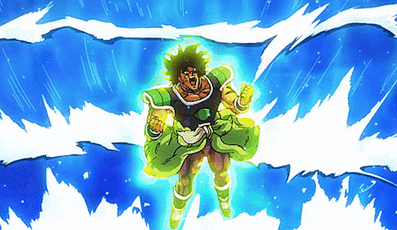
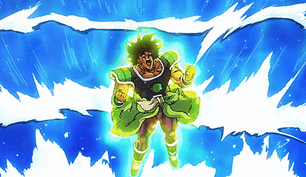

Why toy with Broly when you can just finish the job now rather than later? Or can you? Going full powered Super Saiyan God, Vegeta quits playing games and aims to finish Broly off now, not later.
 
